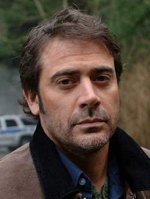

John E. Winchester es un ex infante de marina , es el padre de Dean y Sam Winchester. Debido a la muerte de su esposa, Mary, asesinada por Azazel, John se da cuenta de la existencia de lo paranormal y se convierte en cazador. Obsesionado con el deseo de encontrar al demonio responsable de la muerte de Mary, abandona su trabajo en el garaje y sale a la carretera con sus dos hijos, a los que cría para que ellos también puedan enfrentarse a fantasmas, demonios y demás. tipos. Aunque tiene una relación bastante conflictiva con Sam, sus dos hijos son lo más importante que tiene John en el mundo. A menudo discute con Sam porque Sam no pone a su familia en primer lugar en sus ojos. Muere en el primer episodio de la segunda temporada, haciendo un pacto con Azazel (el demonio de ojos amarillos). Cambia su vida para salvar la de Dean, cuyo espíritu es acechado por una Parca en un intento de llevarlo a la otra vida.